What would it look like without water?
Absorption and backscatter wash out color and contrast, and the damage grows with distance. Feature trackers and detectors lose exactly the distant, low-contrast regions. → Image enhancement
TL;DR: TRIDENT gives an underwater robot three outputs from one camera frame in a single forward pass: a dehazed image, a dense depth map, and a map of where that depth should not be trusted. One backbone shares its features with three parallel lightweight decoders, so all three tasks fit in 0.96 M parameters and run at 102 Hz on a GPU — while beating our previous Joint-ID (150 M parameters) on its own test set in both enhancement and depth.
Underwater visual systems often suffer from blurry textures and low color contrast due to the inevitable light propagation. These issues can significantly degrade the perception of stable robotic operations. In this article, we introduce a novel learning-based sensing system that tackles the multidimensional vision tasks in underwater; concretely, we deal with image enhancement, depth estimation, and uncertainty for 3-D visual systems. Also, we propose a TRIDENT model in a fast and lightweight manner; TRIDENT consists of three parallelized decoders and one backbone structure for efficient feature sharing. In addition, it is designed to be trained to express complex parameterization. In experimental evaluation on several standard datasets, we demonstrate that TRIDENT significantly outperforms other existing methods on image enhancement and depth estimation. Despite performing three tasks, our model has better efficiency than the others for both memory size and inference time. Finally, our joint learning approach demonstrates robustness in feature matching and seamlessly extends from 2-D to 3-D vision tasks.
A camera-guided underwater robot has to answer three questions about every frame, and the physics of light in water ties the answers together. Following McGlamery's model, the observed image is
Ic(x) = Jc(x)·Tc(x) + Bc·(1 − Tc(x)), Tc(x) = e−βc·d(x)
so log(1/Tc) ∝ d: the farther a point is, the stronger the haze. Restoring color needs depth, and the amount of haze is itself a depth cue.
Absorption and backscatter wash out color and contrast, and the damage grows with distance. Feature trackers and detectors lose exactly the distant, low-contrast regions. → Image enhancement
Range sensors such as LiDAR struggle under water, so dense depth has to come from the image itself — and it is hardest where the haze is thickest. → Monocular depth estimation
Monocular depth fails silently at object edges and in far, turbid regions. A robot needs a per-pixel warning to decide which depth to use. → Depth uncertainty
Existing methods answer these questions separately, and the accurate ones are heavy: U-Shape spends 31.6 M parameters on enhancement alone, NewCRF 270 M on depth alone, and our previous joint model Joint-ID 150 M on both. TRIDENT answers all three at once and stays small enough for a robot.
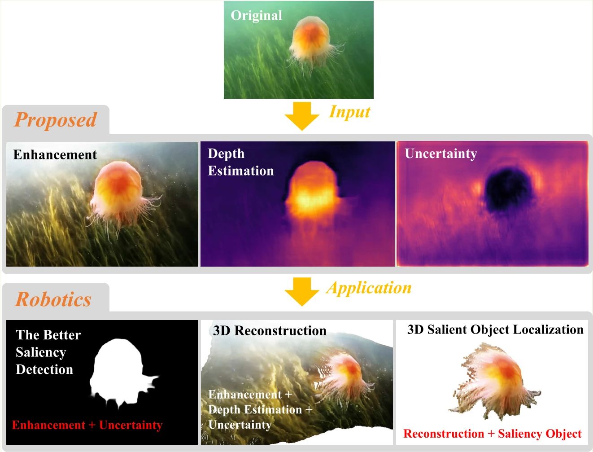
TRIDENT keeps a single encoder and spends its small parameter budget on sharing. Features from four backbone stages are split channel-wise into two light branches; enhancement and depth features are extracted in parallel and exchanged at every scale; and three small heads turn them into the enhanced image, the depth map, and the uncertainty map.
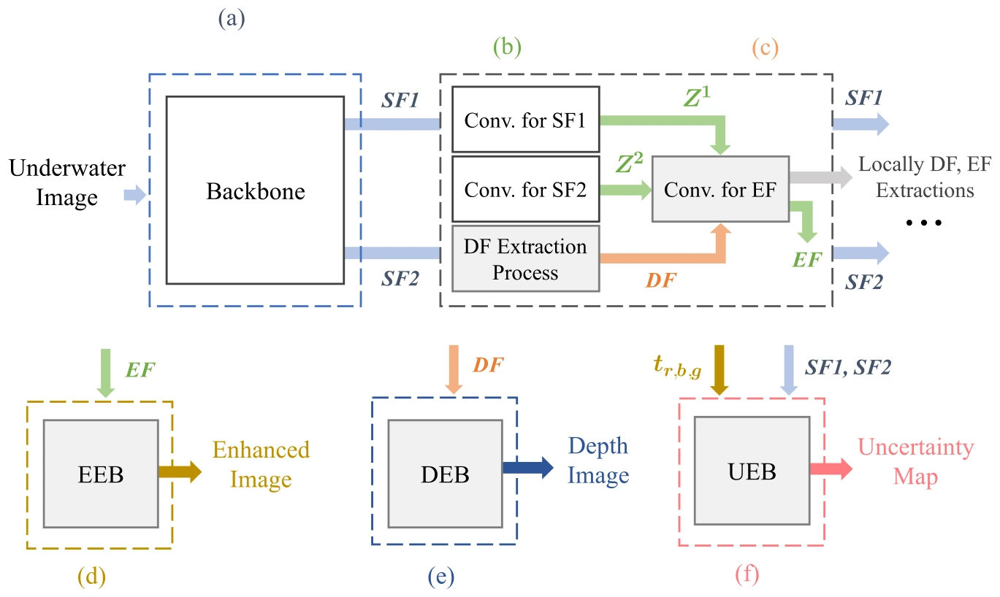
Four design choices keep three tasks inside a sub-million-parameter network.
Reason Giving each task its own U-Net decoder multiplies the parameters, and the heavy decoders of terrestrial depth networks are too slow for a robot.
Method Features from backbone layers k ∈ {1, 3, 6, 12} are split channel-wise into two half-width branches s1 and s2. Three stages learn from them — convolution and up-convolution on s1, convolution and bilinear upsampling on s2, and the depth features — and a ConcatConvBlock fuses all three at every scale.
Reason By the light model, haze is a function of distance, log(1/Tc) ∝ d. A network that predicts the clean image directly ignores this structure.
Method The enhancement extraction block inverts the model, Jc = Ic·tc + bc·tc, by estimating a per-channel inverse transmission tc = 1/Tc and a backscatter term bc. The learned tc grows with distance, as the physics predicts.
Reason Terrestrial depth decoders stack many convolution layers and never see the haze that underwater depth depends on; Joint-ID showed that degradation features make depth more accurate.
Method A trimmed depth-feature extractor mixes depth features with the attenuation features of both branches at every scale. The multi-scale depth features are concatenated, passed through a sigmoid, and scaled by the maximum depth.
Reason Learning aleatoric uncertainty jointly makes training unstable in a small multitask network and drags down the other two tasks.
Method After joint training the network is frozen and only the uncertainty block is trained, with an MAE loss that regresses each pixel's depth error from s1, s2, and tc — inputs that already encode depth and haze.
Training runs in two steps on Joint-ID's synthetic training set: (1) enhancement and depth jointly with 15.5·LSSIM + 1.5·LSILog, then (2) uncertainty with 512·LMAE (Adam, learning rate 2×10−4, 40 epochs, batch 32, RTX 3090 Ti).
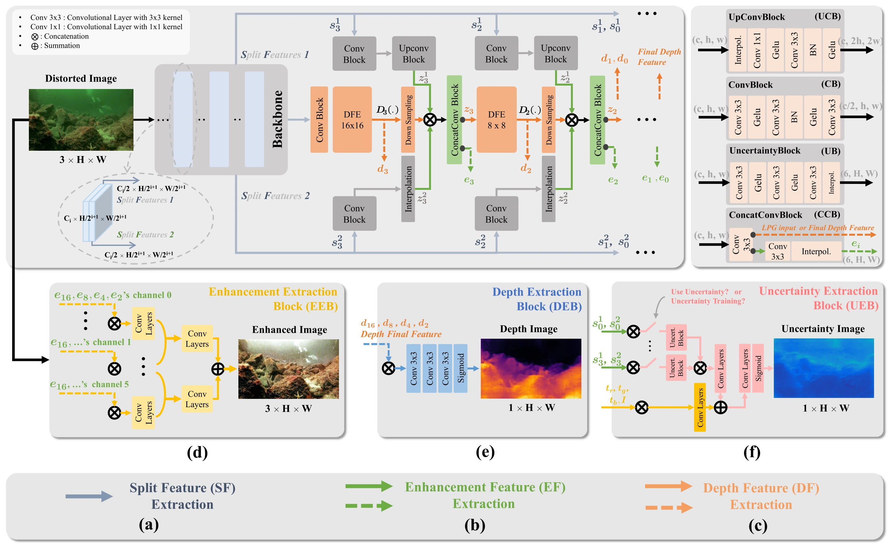
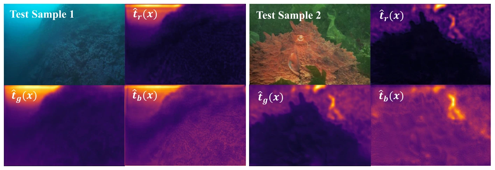
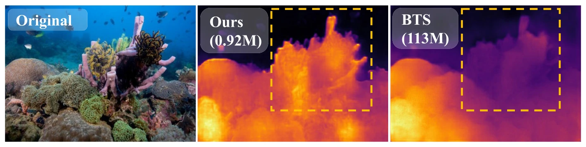
The uncertainty map is trained to predict the error of the depth map, so high values mark the pixels a robot should not trust: object edges, unstable regions, and distant water where restoration starts to fail. Over 126 hazed images of the Joint-ID test set, the predicted uncertainty correlates positively with the true depth error (mean correlation 0.5651).
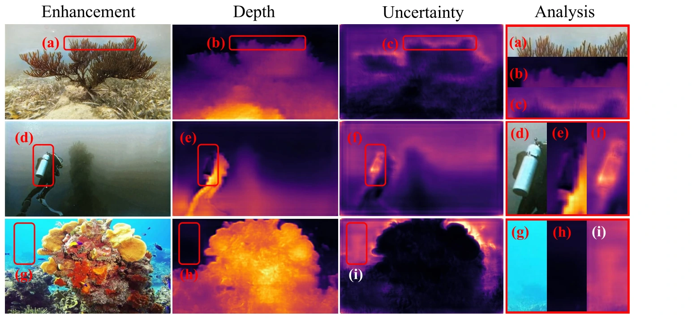
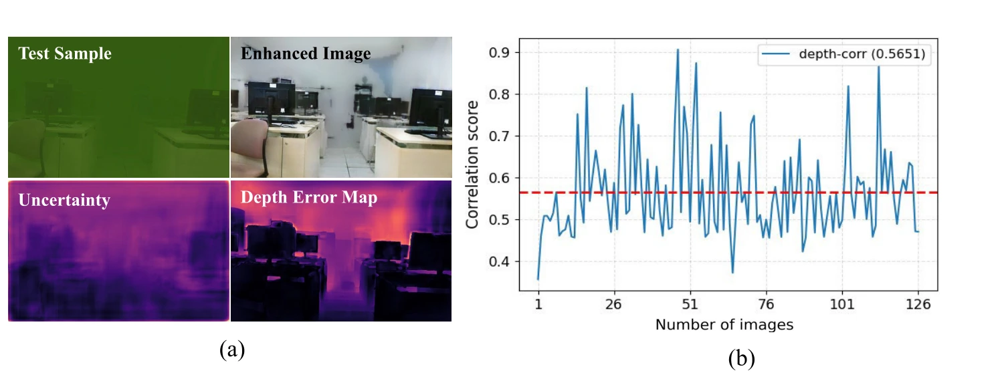
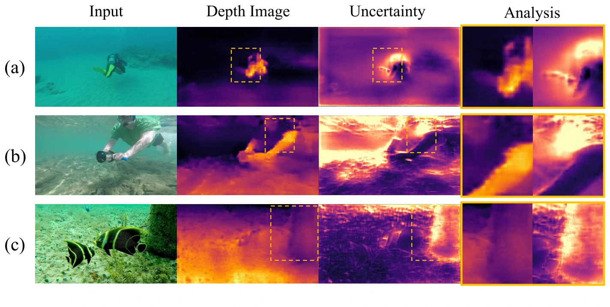
Thresholding the uncertainty map and discarding the least reliable pixels improves PSNR, RMSE, SILog, and Sq Rel at every threshold on the Joint-ID test set; depth Abs Rel rises slightly, by at most 0.005.
| Pixels kept | PSNR ↑ | RMSE ↓ | SILog ↓ | Abs Rel ↓ | Sq Rel ↓ |
|---|---|---|---|---|---|
| All pixels | 22.56 | 0.084 | 12.35 | 0.136 | 0.091 |
| Uncertainty < 7 | 23.06 | 0.083 | 12.26 | 0.141 | 0.079 |
| Uncertainty < 6 | 23.24 | 0.080 | 12.15 | 0.140 | 0.076 |
| Uncertainty < 5 | 23.82 | 0.074 | 11.98 | 0.138 | 0.073 |
Joint-ID test set. PSNR and RMSE are for enhancement; SILog, Abs Rel, and Sq Rel are for depth. A lower threshold discards more pixels. Underlined: best in each column.
Learning aleatoric uncertainty together with the other two tasks lowers enhancement and depth accuracy on every dataset; training the uncertainty block afterwards, on depth error, leaves both heads intact.
We compared TRIDENT with eight enhancement models — DeepWave, FUnIE-GAN, UGAN, UIE-Dal, U-Shape, UWCNN, Joint-ID, and UIEC². On the Joint-ID test set, which has true ground truth and severe haze, TRIDENT is the best on all five supervised metrics.
All models were trained on the same Joint-ID training set. The three strongest of eight baselines are shown per metric; TRIDENT also has the lowest Abs Rel (41.58) and Sq Rel (10.5).
Real data has no clean reference, so we use the no-reference metrics UIQM and UCIQE. TRIDENT has the best UCIQE (color contrast) on three of five datasets; on UIQM it is second on four of them and never first. UIEC² is the closest competitor overall.
| Dataset | UIQM ↑ TRIDENT |
UIQM ↑ best other |
UCIQE ↑ TRIDENT |
UCIQE ↑ best other |
|---|---|---|---|---|
| UFO-120 | 2.96 | 2.98 UWCNN | 0.644 | 0.632 UIEC² |
| U-90 | 2.47 | 2.68 U-Shape | 0.584 | 0.624 UIEC² |
| USOD | 2.92 | 2.99 UWCNN | 0.615 | 0.631 UIEC² |
| USR-248 | 3.05 | 3.07 UIEC² | 0.638 | 0.636 UIEC² |
| Jamaica | 2.86 | 3.00 DeepWave | 0.541 | 0.517 Joint-ID |
No-reference metrics on real underwater datasets. Underlined: TRIDENT is the best of all nine models.
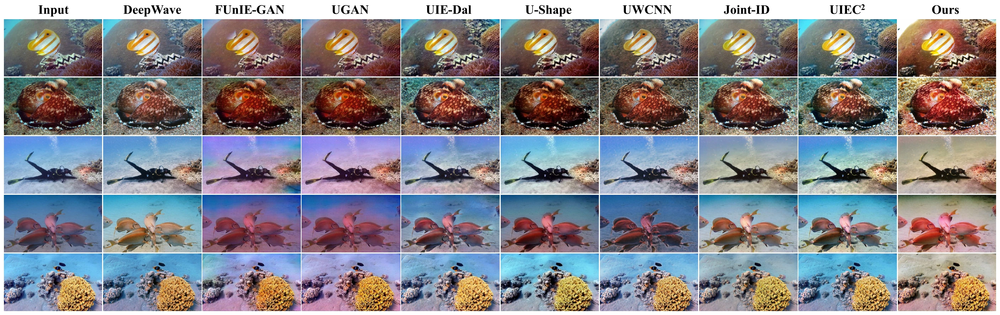
On L400, a real dataset with pseudo ground truth, TRIDENT is the best on Abs Rel and Sq Rel but not on PSNR, SSIM, or RMSE, where Joint-ID leads (20.72 dB). The pseudo references are themselves under-corrected in distant regions, which is exactly where TRIDENT keeps restoring:
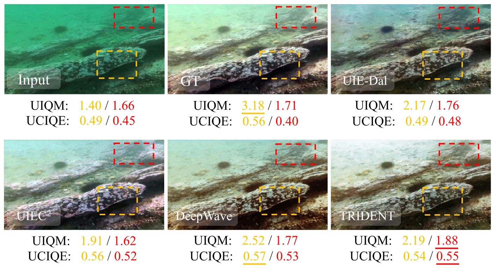
We compared against BTS, GLPDepth, NewCRF, Joint-ID, and UDepth, and against the large foundation-style models MariGold and Depth Anything V2. On the Joint-ID test set TRIDENT has the lowest error on all three metrics.
Seven baselines: BTS, GLPDepth, NewCRF, Joint-ID, UDepth, MariGold, and Depth Anything V2; the three strongest are shown per metric.
On the real Sea-thru and SQUID datasets, Depth Anything V2 (335 M parameters) and MariGold (1.29 B) are the most accurate overall, but they run at 2.8 Hz and 0.05 Hz. TRIDENT is the best on SQUID Sq Rel, third on Sea-thru SILog and SQUID Abs Rel, and weaker on SQUID SILog — with 0.96 M parameters at 102 Hz.
| Method | Params | GPU | Sea-thru SILog ↓ |
Sea-thru Abs Rel ↓ |
Sea-thru Sq Rel ↓ |
SQUID SILog ↓ |
SQUID Abs Rel ↓ |
SQUID Sq Rel ↓ |
|---|---|---|---|---|---|---|---|---|
| MariGold | 1290 M | 0.052 Hz | 16.59 | 0.205 | 0.181 | 21.32 | 0.411 | 2.52 |
| Depth Anything V2 | 335.4 M | 2.8 Hz | 14.71 | 0.183 | 0.173 | 19.14 | 0.382 | 2.21 |
| BTS | 113 M | 67 Hz | 17.60 | 0.231 | 0.198 | 27.76 | 0.689 | 4.50 |
| UDepth | 15.6 M | 135 Hz* | 17.78 | 0.268 | 0.203 | 24.94 | 0.687 | 4.63 |
| Joint-ID | 150 M | 15.3 Hz | 21.06 | 0.259 | 0.224 | 31.26 | 0.530 | 3.34 |
| TRIDENT | 0.96 M | 102 Hz | 17.17 | 0.248 | 0.196 | 33.43 | 0.481 | 2.07 |
Real underwater depth. Underlined: best of all eight models in the paper. *UDepth outputs depth at half resolution (128×128).
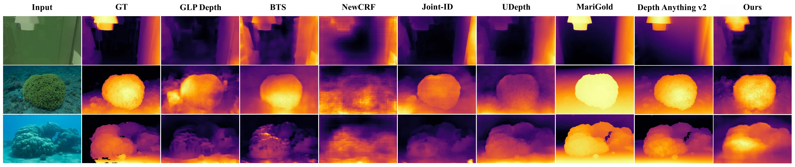
Sharing one backbone pays off in size and speed. At 256×256 on an RTX 3090 Ti, TRIDENT runs at 111 Hz for enhancement and depth and at 102 Hz with uncertainty, in under 1 M parameters. Only enhancement-only models are smaller (DeepWave 0.28 M, UIEC² 0.55 M), and only FUnIE-GAN, UGAN, UIE-Dal, and UDepth (at half resolution) are faster on the GPU — none of them produces both an enhanced image and a depth map.
Both models estimate an enhanced image and a depth map; TRIDENT also estimates depth uncertainty. GPU: NVIDIA RTX 3090 Ti; CPU: 11th-gen Intel i7.
| Method | Tasks | Params | Memory | GPU FPS | CPU FPS | Output |
|---|---|---|---|---|---|---|
| Enhancement | ||||||
| DeepWave | 2* | 0.28 M | 1.2 MB | 17 Hz | 3.2 Hz | 3×256×256 |
| FUnIE-GAN | 1 | 7.02 M | 28.1 MB | 417 Hz | 32.4 Hz | 3×256×256 |
| UGAN | 1 | 54.4 M | 217.7 MB | 330 Hz | 15.4 Hz | 3×256×256 |
| UIE-Dal | 1 | 13.4 M | 53.7 MB | 211 Hz | 8.2 Hz | 3×256×256 |
| UIEC² | 1 | 0.55 M | 2.2 MB | 60 Hz | 3.7 Hz | 3×256×256 |
| U-Shape | 1 | 31.6 M | 126.6 MB | 38 Hz | 4.3 Hz | 3×256×256 |
| Depth estimation | ||||||
| BTS | 1 | 113 M | 452.2 MB | 67 Hz | 4.5 Hz | 1×256×256 |
| GLPDepth | 1 | 61.2 M | 245.2 MB | 47 Hz | 5.8 Hz | 1×256×256 |
| NewCRF | 1 | 270 M | 1082 MB | 56 Hz | 1.2 Hz | 1×256×256 |
| UDepth | 1 | 15.6 M | 62.7 MB | 135 Hz | 25.1 Hz | 1×128×128 |
| MariGold | 1 | 1290 M | 5157 MB | 0.052 Hz | – | 1×256×256 |
| Depth Anything V2 | 1 | 335.4 M | 1341 MB | 2.8 Hz | 0.095 Hz | 1×256×256 |
| Enhancement + depth (+ uncertainty) | ||||||
| Joint-ID | 2 | 150 M | 601.9 MB | 15.3 Hz | 3.1 Hz | image + depth |
| TRIDENT | 2 | 0.92 M | 3.9 MB | 111 Hz | 18.7 Hz | image + depth |
| TRIDENT + uncertainty | 3 | 0.96 M | 4.1 MB | 102 Hz | 16.5 Hz | image + depth + uncertainty |
*DeepWave's second task is super-resolution. GPU: RTX 3090 Ti; CPU: 11th-gen Intel i7; 256×256 input.
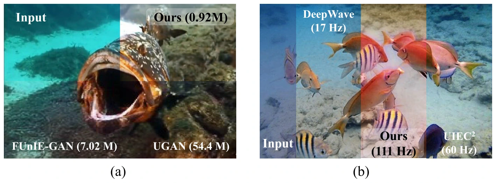
Adding parallel decoder branches helps both tasks, with diminishing returns. The jump from one to two branches is the largest; the third still improves PSNR by 12.1% and SILog by 12.6%; the fourth and fifth change the metrics by 0.04–3.5% while each costs 11–16% of the speed. Three branches is the compromise TRIDENT uses.
Each added branch costs about 0.08 M parameters. Enhancement PSNR and depth SILog on the Joint-ID test set; speed on GPU.
Restoring distant regions gives SLAM and 3-D reconstruction more to hold on to. On two real underwater videos, TRIDENT keeps the most feature correspondences between consecutive frames: FUnIE-GAN and the raw input lose the distant keypoints, and UIEC² keeps fewer of them.
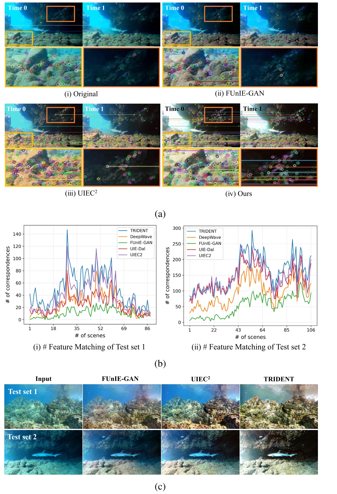
The three outputs work together: enhancement keeps a salient object intact for saliency detection, depth lifts it into 3-D, and uncertainty trims the unreliable object edges before localization.
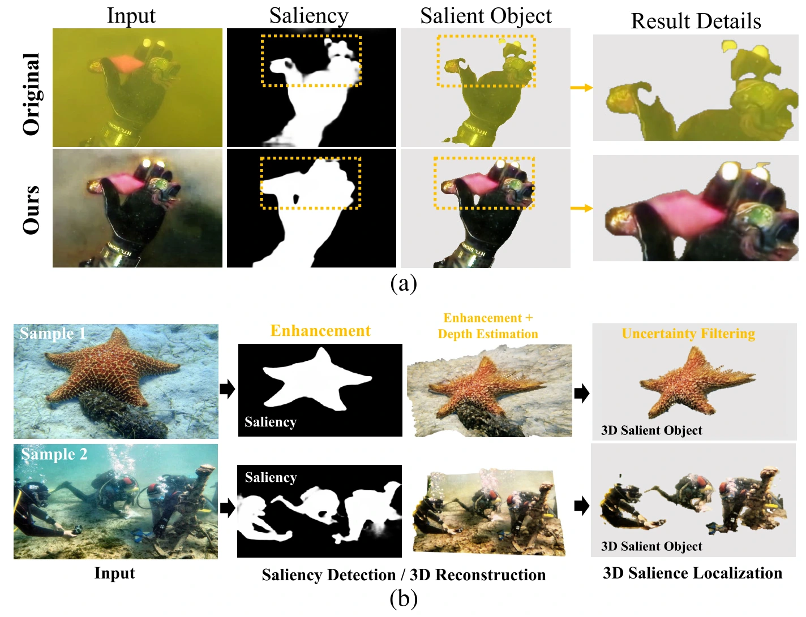
TRIDENT's depth is normalized and scaled by a fixed maximum depth, so its metric scale is unknown. That is a problem for large-scale 3-D reconstruction and SLAM.
Recovering metric depth from sparse range measurements is the direction of our follow-up PGSPN (IROS 2026 workshop), which uses underwater attenuation as a dense depth cue for depth completion.
@article{yang2025trident,
author = {Yang, Geonmo and Cho, Younggun},
title = {TRIDENT: Efficient Triple-Task Learning of Dehazing, Depth, and Uncertainty Estimation for Underwater 3-D Robot Visual Perception},
journal = {IEEE Sensors Journal},
volume = {25},
number = {1},
pages = {858--870},
year = {2025},
doi = {10.1109/JSEN.2024.3488495}
}